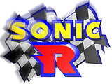

|  |
| Sonic R Story |
|
After a recurring battle to the death with Dr. Robotnik, Sonic and Tails (who adores him) continue their adventurous journey together. During their journey, they see a commercial on the giant screen of a building that says "Calling all contestants for the World Grand Prix!".
"Sonic, Sonic! It's a race to see who's the fastest in the world!"
Just as he was about to leave, his eyes were glued to the switching screen.
Sonic's eyes were glued to the screen which read: "List of Scheduled Players: Dr. Robotnik". |
|
Sonic wasn't the only one who saw this video that was broadcast around the world. The news of the race had reached Knuckles, Sonic's good rival, and Amy, the girl in love with Sonic.
"Sonic, this World Grand Prix is where I'm going to settle a score with you!" |
|
Someone had been scouting the whole thing using a spy satellite. His name is Dr. Robotnik. He is an evil super-genius scientist who has challenged Sonic to battle many times before.
"Hahhhhh... Sonic, you've fallen right into the trap."
"Hahhhh... I believe I have the perfect plan... At last, the time has come for me to achieve my long-held dream of world domination... Hahhhhhhahahaha..." |
|
Will Sonic be able to stop Dr. Robotnik's ambitions? And where will the World Grand Prix go?
Now, it's time for the World Grand Prix to begin! |